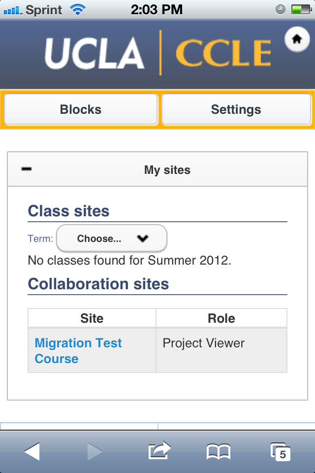
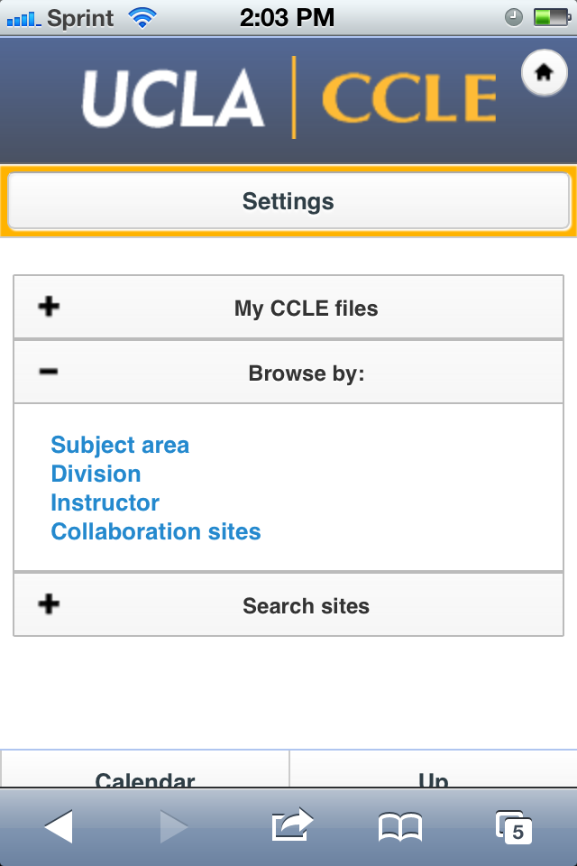
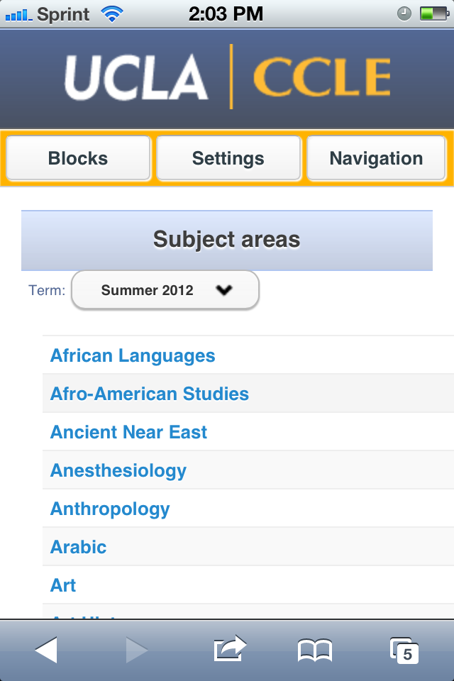
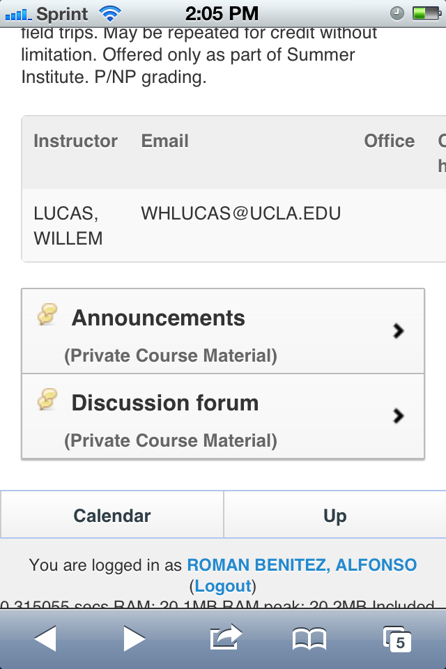
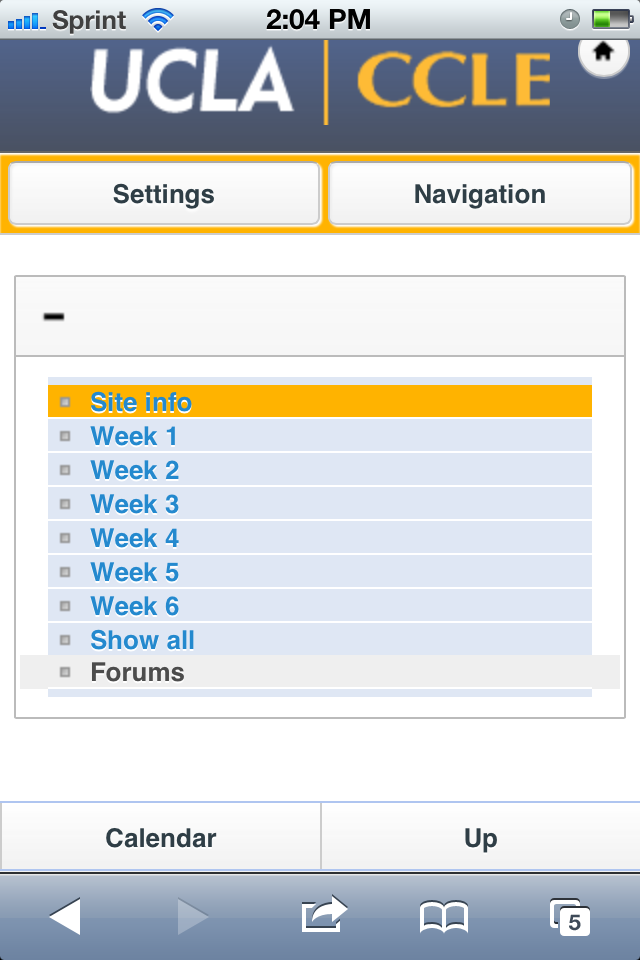
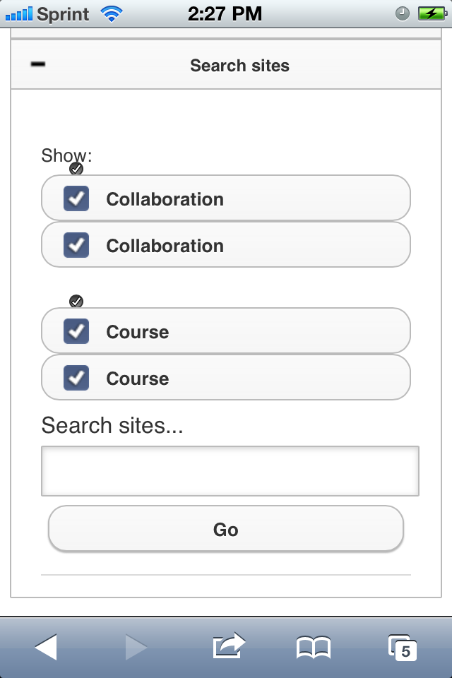
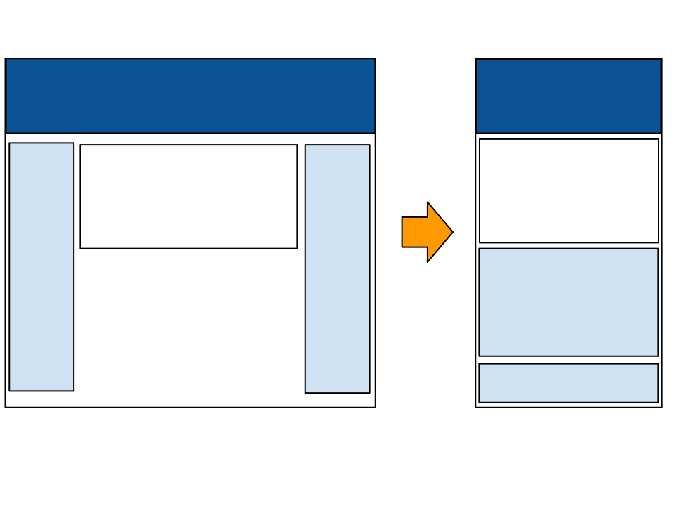

Two options at this point. We can use the Moodle provided mobile theme with modifications. Or we can use responsive design to make our current theme look good in mobile.
Before we get into that, let me tell you about the current Moodle mobile theme.
Moodle's current solution to mobile needs.
Self contained theme that's separate from our UCLA theme
Uses jQuerymobile -- it's nice, but mostly incompatible with Moodle's preferred YUI framework
Requires some modifications -- primarily CSS and branding, but also need to update code in order to render our content correctly.
Works out of the box... more or less
Front page

Block navigation (through button)

Browse By (with fixes)

Course sites

Course sites (broken)
Site menu (slightly broken)

Some of these items can't be easily fixed with CSS overrides. Would require lots code modifications.

But I want to show you a better approach.
An approach to web design in which your site is crafted to provide an optimal viewing experience for all screen sizes.
Easier said than done. This requires some planning and is usually done as a bottom up design. That is, you design with mobile in mind, and progressively enhance your site as screen size grows.
We don't want to re-design our site. We only want to modify it so that it looks good on mobile screens.
CSS
That's it.
Sort of...
We use the fluid grid (sizing based on percentages). We already have a fluid layout in our current Moodle theme... sort of. Nothing that can't be tamed with some CSS.
We also use CSS media query (@media rules). This allows us to modify the site for a specific screen size.
We also make some minor tweaks to our current theme. Mainly some conditional CSS rules to be applied based on column layout (we use two and three-column designs).
We start with original site layout. As screen becomes smaller, the side block columns collapse below the main content.
When this happens, the column content resizes to 100% of the screen width.

Demo
So what approach do we want to pursue for mobile?
With responsive design, we only have one site to maintain.
We have to devote some resources to make CSS changes, but this is also true for the mobile theme.
We can make experience as feature rich as it needs to be.
We can improve experience with feedback.